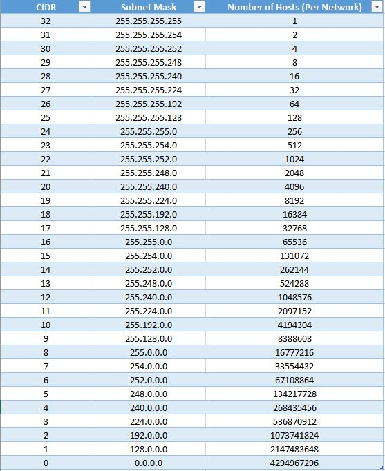

Communications Primer¶
Table of Contents
Introduction¶
This primer exists to provide additional information to the user on how communications function, what general capabilities exist, and the opportunities for expansion of features available to the communication framework within AFSIM. It is not intended to be a replacement for knowledge of communications procedures, terminology, models, etc. that currently exist as real world equivalents. Generally speaking, when the implementation in AFSIM differs greatly from traditional understanding, it will be highlighted to avoid confusion. Finally, this primer is not intended as an explanation on what changes have been made from previous versions of AFSIM, but some explanations of communications capabilities will mention such differences (or “non-differences”) for the purpose of explaining why communications behave in the way that they do.
Addressing¶
All communication objects in AFSIM are required to have an identifier, or address, to uniquely identify every communication object that exists in the simulation. The most widely recognized method of addressing available is the Internet Protocol (IP) addressing schema, which is utilized for internal addressing of communication objects in AFSIM. Furthermore, AFSIM uses the IPV4 Classless Inter-Domain Routing (CIDR) notation for internal addressing of communications. This addressing method was selected due to its prevalence, and its ability to provide additional information about “group” or “network” membership based on such addressing, which allows for the removal of explicit modeling of networks as objects in the communications system. (see Networks for more details)
The use of IPV4 CIDR, as an Internet addressing schema, is obviously not applicable for all communication objects, especially those based on traditional radio communications. However, it should be noted that while these objects are still required to have an address based on IPV4 CIDR for consistent addressing within AFSIM, their behavior is not restricted to act in the manner one would expect of a traditional IP based communication device. For the most part, the user can ignore addressing if they so choose.
IPV6 is currently not available, but the addressing was developed with the idea that other addressing schemes (derived from a base address class) could be implemented in the future. Generally, IPV4 should provide far more host addresses than the simulation could ever handle simulating at any given time, if CIDR values are restricted appropriately to avoid excess “sparse” network assignments.
The IPV4 CIDR addressing notation uses a 32-bit value arranged as four integers, separated by periods (‘.’) of byte values, which may range from 0 to 255. The only restricted address in AFSIM is the address of 0.0.0.0, which is used to identify a “null” address (an address that has not been yet assigned in the simulation). The intricacies of the real world IPV4 addressing, which restricts certain addresses based on other capabilities largely restricted to IP functionality (such as multi-casting, broadcasting, etc.) are not implemented in AFSIM. With the use of CIDR notation, an additional value is provided with the address that indicates the portion of the address used to address the network itself, which also directly indicates how many “hosts” (individual communication objects) that can belong to that network at any given time. Since the CIDR value is variable, network size is flexible. It should be noted, however, that using excessive network sizes without actually using the space provided restricts the overall number of addresses available for assignment in the simulation. In other words, if manually determining addressing, restrict the usage of small CIDR values. CIDR values are restricted between 1 and 31, of which the implications can be seen below:
The possibilities exist currently in AFSIM for giving an address to a communication object.
Providing the name of the network the communication object belongs to.
In this case, the address is automatically assigned to the lowest free address in the network.
By extension, the network designated must be large enough (based on the CIDR value) to support all the communications assigned to this network.
Providing an explicit address in the IPV4/CIDR notation.
In this case, the communication object will automatically join any network that already exists with this address.
If no network exists for this address, one is created, and provided a name referencing the creating platform/communication.
Providing an explicit network address in the IPV4/CIDR notation.
The network will be created if there are no collisions with addressing of already existing networks.
The name of the network is referenced from the creating platform/communication.
The address provided for the communication is the first available in the newly created network.
Doing nothing. The communication is automatically joined to a generic network always available in AFSIM, named “default”. It is provided the lowest possible address available in the network.
Note
The “default” network in AFSIM is the reserved address 0.1.0.0/16. This provides ~65,000 communications assignable to this network.
Warning
Do not create networks in the range of 0.1.0.0 to 0.1.255.255, as these addresses belong the default network and will cause a simulation initialization error if attempted.
Warning
Do not create networks in the range associated with multicast, 224.0.0.0 to 239.255.255.255.
Networks¶
Networks in AFSIM are collections of communication objects, grouped together by like network addressing prefix of their IPV4 CIDR addresses. In previous versions of AFSIM, communications were restricted to objects within the same network, unless other objects and settings were used (such as the now deprecated AFSIM_COMM_ROUTER). This concept severely restricted the flexibility and modeling capabilities of communication objects, and was removed in favor of modeling every communication device as potentially capable of communications to any other communication, with restrictions provided by the existence of communications links and the communication implementation itself. In order to enable communications between any two communication objects, only a link needs to exist between them.
Network objects in AFSIM are user definable objects, either through scenario input or the scripting language. These objects enforce specific rules about membership, connectivity, and behavior of the communication objects associated with the network. In addition, several pre-defined network types are available. More may become available in the future, or users may extend the available framework and add their own. The network objects available in AFSIM typically enforce a network topology (such as ring, mesh, star, etc.), but any rule may be enforced on a network definition on the actions of add/removing a member or adding/removing a link in the network.
In the future, it is planned to also provide a method for driving updates on network objects, for time or event based network rule enforcement. This will provide a way of updating network state based on protocol usage, the simulation environment, or general events that the user determines should drive such an event. Although not currently available, it is expected that this mechanism will provide ad-hoc networking capability based on comm discovery (and loss) events.
Network Manager¶
The Network Manager is the primary collection point for data regarding communications in AFSIM. Every communication object in the simulation is required to register itself with the network manager to get an address (either specified by the user or dynamically assigned). Every communication is added to a graph object as nodes, and the ability to communicate between communication objects (nodes) is represented as edges between objects in the graph. The data maintained in the network manager is considered “truth” data, as in, the actual state of communications within AFSIM at any given point in time. It also provides an object, available from the AFSIM simulation object, that can provide the addresses of any communication object, the network it belongs to, and a list of other members of the same network. In essence, the network manager acts as a DNS server.
Routing and Protocols¶
Updated for AFSIM v2.5.0
Routing in AFSIM is the ability to determine a path of communications from the sending communication device to the intended recipient. This also implies the capability to determine if a message can be sent to a destination, based on whether a path was found.
Routing is represented by the router object in AFSIM. This should NOT be confused with the colloquial concept of a router as network hardware, but a representation of routing and pathfinding capabilities. It can certainly be used to represent a router as network hardware, but this is not its primary purpose. Users should also not be alarmed by the concept of using a router with a radio based communication system, as key radio based capabilities (such as relays) are a form of pathfinding that the router object in AFSIM represents, albeit a very simple form.
Router objects are platform parts, and a platform can have any number of routers associated with it. One router is always provided for default capabilities in AFSIM that were provided in previous versions to help maintain backward compatibility, and is referred to as the default router. Every comm, referred to as an interface for a router, is associated with a router, and can only be associated with a single router at any given time. Users do not need to be normally aware of these concepts in simplistic comm use cases, as the default router exists on the platform without any input by the user, and all comms declared on a platform are interfaces for the default router.
Routers also contain capabilities that can emulate the concept of a router as hardware, such as acting as a switch between all connected members by creating communication links between them (the default behavior), which can be disabled if needed.
The way a router finds the path for a message is not directly determined by the router itself, but by the router_protocol it uses (or multiple protocols). Routers support any number of unique protocols, and during typical operations, queries each protocol in an order of precedence until one of these protocols determines a path to the destination. If such a path is found, it instructs the comm object to transmit the message to the next hop in the path. Not all router protocols are required to provide pathfinding for messages, and some enable different addressing schemas, routing knowledge updates, or otherwise enhance (or restrict) the capabilities of the router.
Two router protocols are provided by default with every router object, although they may be removed if needed - WSF_COMM_ROUTER_PROTOCOL_LEGACY and WSF_COMM_ROUTER_PROTOCOL_MULTICAST. These are generic protocol implementations intended to provide some of the legacy capabilities inherent in previous versions of AFSIM, such that scenario input files do not require any (or minimal) updates to maintain functionality in the current and future versions of AFSIM, with respect to simply getting a message from comm A to comm B.
Finally, in early revisions of the enhanced comm framework, the router provided the concepts and user toggles for perception vs. truth based usage of network states. This has been removed, as the router protocols now determine (on a case-by-case basis) whether they use the simulation truth for network state in regards to pathfinding, or if they maintain a perceived network state locally, or some mixture of the two. Since router objects can use multiple protocols, this allows conditional selection of pathfinding based on protocol availability in a user configurable selection of truth or perception based routing.
Communication Layer Implementation and Comm Protocols¶
Communication objects in AFSIM are organized using a 7-layer OSI model for implementation of communication types. Essentially, each communication object contains an object call a protocol stack, which contains multiple “layer” objects that process messages being sent from and being received by a communication object. When a communication is instructed to send a message, that message is passed through every layer in the stack, with every layer given the option to either pass the message on, or abort the process. Receipt of a message works in the same way, except the message traverses the layers of the protocol stack in the opposite direction (bottom to top), with the same options to either pass the message to a higher layer or abort the receive.
Note that just because this model is used for AFSIM comm objects, do not infer that comm models are only IP based. This is just a logical, flexible, and extensible way to support modeling of comm objects, regardless of how they function or their intended use, even if EM-based. Nothing prevents end users from still defining their own comm objects using a single layer, or potentially skipping the layer model. It is only provided in this way to alleviate the cost incurred to make new models, maintain existing ones, and support others that haven’t been created yet.
The implications of the layer structure is that each layer may perform operations internal to the communication and/or on the message, and handle message processing in a manner that fits the particular communication implementation. Many communication objects may choose to reuse the same layer implementations, or create their own, as these layers are fully extensible via the AFSIM framework.
Currently, the following layers with basic functionality are provided with AFSIM:
The application layer - On sending, determines possible receivers at the destination platform.
The transport layer - On sending, attaches the proper transport protocol to the message, so that other communications know how to handle the message.
The network layer
On sending, uses the router to determine what paths exist to the target recipient, and selects the “best” path (determined by the router’s available protocols).
On reception, determines if the message is intended for this platform, or is just a hop. If it is just a hop, finds the best path to the target, and forwards the message.
The data-link layer - On sending, puts the message in a queue until the communication is physically able to transmit.
The physical layer - On sending, determines the timing involved with message transmission, and emits EM (if applicable). Notifies the data-link layer (if applicable) when free to send more messages that are queued. If using reliable communication as a transport protocol and the send fails, notifies the network layer of the send failure (for routing update purposes).
Other layers are provided in the codebase, but are not used in a meaningful way at this time.
Any number or types of layers may be added to a communication implementation, and can be modified to function as necessary. This allows far more detailed implementations to be created, or even potentially a packet level implementation if necessary.
Comms also have a unique component available to them, the comm protocol. Any number of unique comm protocols may be associated with any given comm instantiation in AFSIM. Comm protocols modify the default behavior of the comm model’s layer processing, as the default layer implementations in the comm models provided with AFSIM query the comm protocols in each layer that a message traverses on the comm during typical send/receive operations. As such, comm protocols allow modifications to existing comm models without having to create entirely new models to modify behavior. This decreases the amount of development required to create new comm capabilities, allows them to be used on existing models, and greatly reduces code replication. Currently, only a single comm protocol is predefined for usage in AFSIM, WSF_COMM_PROTOCOL_IGMP, which enables multicast group membership by comm interfaces, and allows the reception of multicast messages by the comm object.
A Note On Command Chains, Platform Specified Message Targets, and Comms¶
Previous versions of AFSIM used the command chain to structure the communication laydown/network state representation. This is being removed iteratively with updates to comms in AFSIM. The reasons for doing this are the following:
It is unrealistic, even if convenient, to assume the communications laydown mirrors the command chain.
Using the assumption that the command chain represents the communications structure forces assumptions in behavior that prevent higher fidelity modeling, and by extension, experimentation with AFSIM as a tool where communications are an important variable.
This was a model used by some older simulation frameworks, and replicated initially in AFSIM, to aid in consistent behavior for verification and validation purposes. It now limits the capabilities of AFSIM at a time where effective communications modeling is of increased concern.
Command chains specify target platforms for reception, not target comms (see below for why this is detrimental)
In addition, the specification of just a target platform for comm messages is generally being removed to the extent possible in AFSIM, for the following reasons:
A platform can maintain multiple comms. Simply specifying a platform as the recipient of a message doesn’t indicate which comm will receive the message.
Due to the above, selection of the comm that will receive the message on the platform is a matter of assumptive behavior, or worse, random ordering. This is unacceptable due to the requirement that simulations be deterministic and reproducible.
Not knowing the specific comm interface over which a message is received can lead to difficulty in debugging errors in scenario modeling, such that linkage on the platform may not route incoming messages to their correct part destinations, OR:
Users are forced to replicate internal linkage consistently over all comm interfaces to ensure correct internal platform routing of messages, which then forces the use of unique message types for filtering and added complexity to laydowns.
Distributed Simulations and Communications¶
When using communications in a distributed environment, users need to be aware of certain details to ensure proper functionality.
By default, communication devices can be dynamically addressed in a local simulation context. While how this actually occurs is outside the scope of this documentation, it should be noted that when users let the simulation assign an address to a communications device without explicitly defining it, the resulting address is predicated on the availability of any subsequent addressing in the network that the communications device belongs to on a first-come-first-serve basis, starting for the lowest available address and incrementing to the highest.
This is problematic in the distributed simulation use case, as the ordering of communications devices can be inconsistent from one simulation instance to another. This likely results in conflicting address assignments, with the obvious implications of incorrect delivery and/or message loss due to messages arriving at other simulation instances with an address that was correct in the sending simulation instance, but wrong in the instance it was received in.
Currently, there is no mechanism for ensuring correct and unique address assignments across distributed simulation instances when using dynamic addressing.
It is highly suggested that users using communications in a distributed use case utilize static addressing for their communications devices. Static addressing circumvents the issues noted above. Furthermore, dynamic addressing is still viable in a distributed use case as long as there is the assurance that any communications devices using dynamic addressing belong to a network that only contains members that are defined and used within the same simulation context locally. As such, users may configure their scenarios to still take advantage of dynamic addressing, as long as they modify their network laydowns to only contain communications devices defined and managed locally.
Other Notes¶
Several additional points are important to note with communications in AFSIM.
The communications framework does not pass messages end-to-end (previous AFSIM versions did this in some instances). Sending a message may generate a path with multiple hops. Each communication object in AFSIM receives, processes, and resends these messages until reaching the destination.
By default AFSIM continues assigning objects to a mesh network named “default”, with initial linkage already provided.
Platform based sending of messages, in all cases, is removed. This is including any command chain based operations. The new framework’s fidelity has increased sufficiently that generalizing a message to be sent to a platform reference assumes there is only one comm on the recipient, which may not be the case. All comm send calls require a sender comm and a receiver comm, in one of many formats. Currently, where these previous methods exist for sending to a platform, all comms available on the sender will send the message, to provide a temporary method of transitioning input files.
Gateways are still available, and any failed message routing will automatically pass on a message to a defined gateway (assuming the user’s selected protocols support this). Gateways are defined per communication object, so that any communication may have its own gateway defined. Use of the old “default_gateway” command is no longer supported.
AFSIM 2.3 Comms Updates¶
The built-in routers for communication objects in AFSIM provide different timings for message transmission than the previous AFSIM_COMM_ROUTER. The AFSIM_COMM_ROUTER did not provide for any delay in message transmission for messages coming into the platform and subsequently retransmitted from a different communication object. The current routing capability does account for this delay based on the defined transmission specifications of the communication object sending the message to the outbound communication (if using two communications for such an action). The delay can be avoided with using a single communication device reception/transmission on the platform, or by using a local bridged connection with the transmission properties of a reception only communication being set for instantaneous transmission/propagation. In future versions, AFSIM may be able to support routers with multiple comm objects as multiple defined interfaces, to avoid this.
The retransmit_link capability no longer exists, as it was a method for avoiding limitations in the previous architecture that no longer exist.
The relay command no longer exists, as all communication objects have implicit relay capabilities now in AFSIM.
The link_protocol commands are currently removed. They were non-functional in most applications, and may be re-introduced in a future version of AFSIM.
The number_of_channels command is also removed, as a function of the link_protocol command mentioned above.
AFSIM 2.4 Comms Updates¶
With the release of AFSIM 2.4, several comm changes were made to allow for additional analysis capabilities. A guide with examples for scenario conversion and comm usage in AFSIM 2.4 is available here: AFSIM Comms 2.4 Conversion Guide.
Platform-based communication is removed and sending of messages is from comm to comm only. This also includes all command chain-based operations. The new framework’s fidelity has increased sufficiently that generalizing a message to be sent to a platform reference assumes there is only one comm on the recipient, which may not be the case. All comm linkages require a sender comm and a receiver comm, in one of many formats. Currently, where these previous methods exist for sending to a platform, all comms available on the sender will send the message, to provide a temporary method of transitioning input files. However, this will create quite a few extra events for the messages not delivered. It is suggested to make the comm definitions correct.
AFSIM 2.5 Comms Updates¶
The major changes for comms in AFSIM 2.5, such as the provision of routers as platform parts/components and router_protocol usage are reflected in the above updates in the routing section.
In addition, it is important to note that the recent provision of the “bridge” input has been removed, as the router now provides this capability inherently.
Any additional changes are noted in the change log for AFSIM v2.5.
AFSIM 2.6 Comms Updates¶
AFSIM 2.6 introduces medium objects. Medium usage provides a method to vary the transmission and propagation characteristics of a message that is not solely based on the sending object, and removes a long standing shortcoming in the modeling capabilities of the communications framework. In addition, this update provides the infrastructure for much higher fidelity physical modeling over various mediums in the future. Finally, this update includes simplistic multiplexing capabilities now inherent in all comm models, while enabling the modeling of more complex multiplexing protocols in the future.
Any additional changes are noted in the change log for AFSIM v2.6.
This update supports all legacy input.
AFSIM 2.8 Comms Updates¶
Previously, because of limitations in the method in which the AFSIM simulation initialized platforms, comms initialization was required to be deferred until after the typical initialization process, and much of the script interface functionality for communications was not valid or available for usage with on_initialize and on_initialize2 script blocks. As of AFSIM 2.8 and the modification of the simulation initialization procedure, script functionality for communications is available for usage with the on_initialize2 script block. Most script functionality relating to communications is still unavailable for usage in the context of on_initialize.